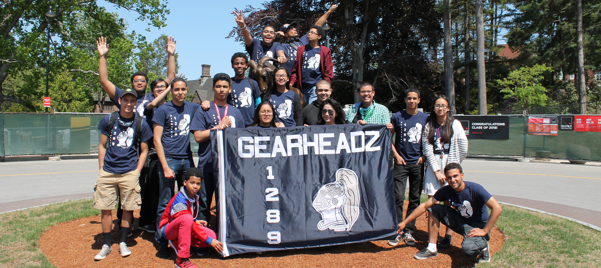

Battlecry
by Monica Sim
Posted on June 13, 2015 at 1:00 PM Tweet

Battlecry was an amazing end to the year! It was only slightly different from other competitions because every team went into the alliance and I seriously only realized this when we went into alliance selections. I just need to remember that when we go to our next Battlecry.
And like every competition, I would freak out whenever we would arrive at the venue. However I wasn't surprised by the size of WPI because it was a college; of course it was going to be a surmountable size. The grassy area in front of the building where the competition was held was beautiful though! I was so tempted to lay in it and the weather for both days permitted that. There was a Dunkin Donuts on the campus and I'm pretty sure they got lots of money from all those people.
The general competition went as usual, we had scheduled matches and ate lunch. Everybody did what was necessary. Troubles occurred during this competition, but the team talked through it and we worked with it. The trouble that occurred was added into the list of improvements.
Art assigned Elson and I a task to create an article about what happened during the competition. The things I realized from carrying out this mission was pretty amazing. I realized that a lot of the members have the same thoughts. What one person wanted to improve in robotics connected what another person said they wanted to improve. The most important thing is that a lot of the improvements are very possible if we were all committed and worked as hard as possible to achieve these goals. So next year I plan to put in so much more effort. Battlecry was a great way to set some goals for the next year. Chairman's Award and an amazing robotics year, here I come!
Meet The Author

Monica Sim
Hello! I'm Monica Sim, 15 year old freshman at MST. In robotics, I'm here and there. I dabble in a bit of mechanical, but my official sort of "tag" for robotics is under the fundraising team. During the competitions, I'm in the safety team, pit crew, and the fundraising team. Usually cheering in the stands and freaking out when we do well. But outside of all the meetings, my main hobby is procrastinating to the ultimate max level. I also like to call myself a little advocate for self-love, self-improvement, and just living in the present. I try to write stories (Emphasis on try... Having a lot of goals, but being a big procrastinator is bad.) and I like to journal here and there as well. Both riding an elephant and watching all the animes in the world are on my bucket list. Yeah, so that's my little autobiography~